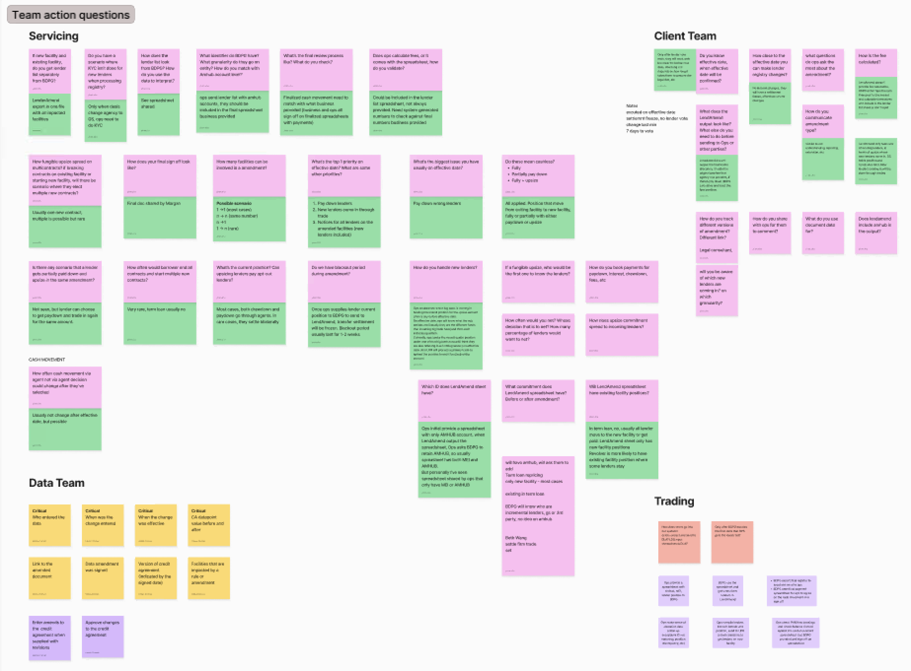
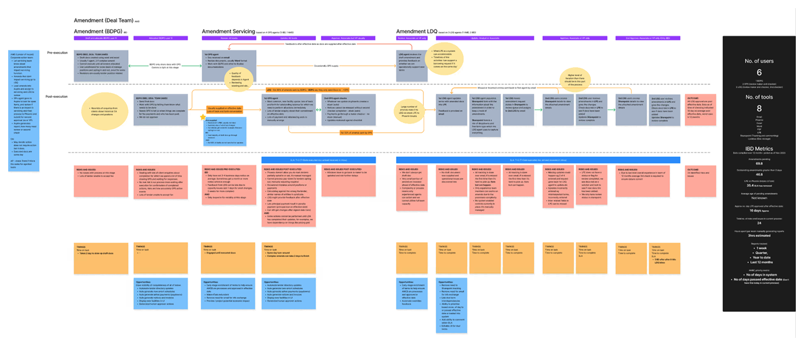
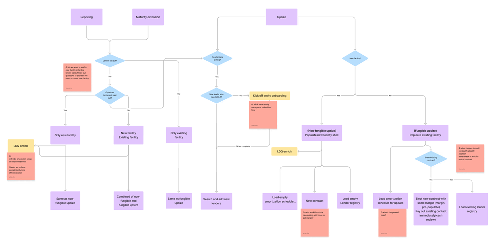
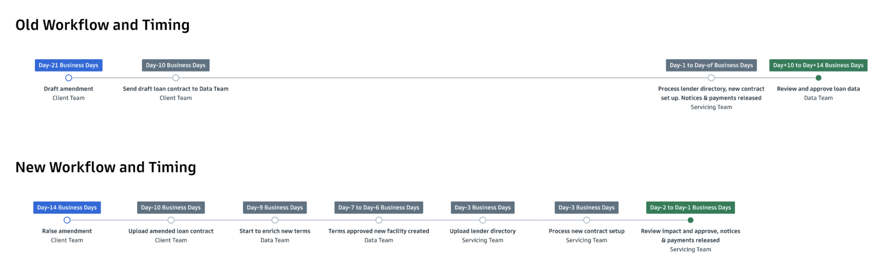
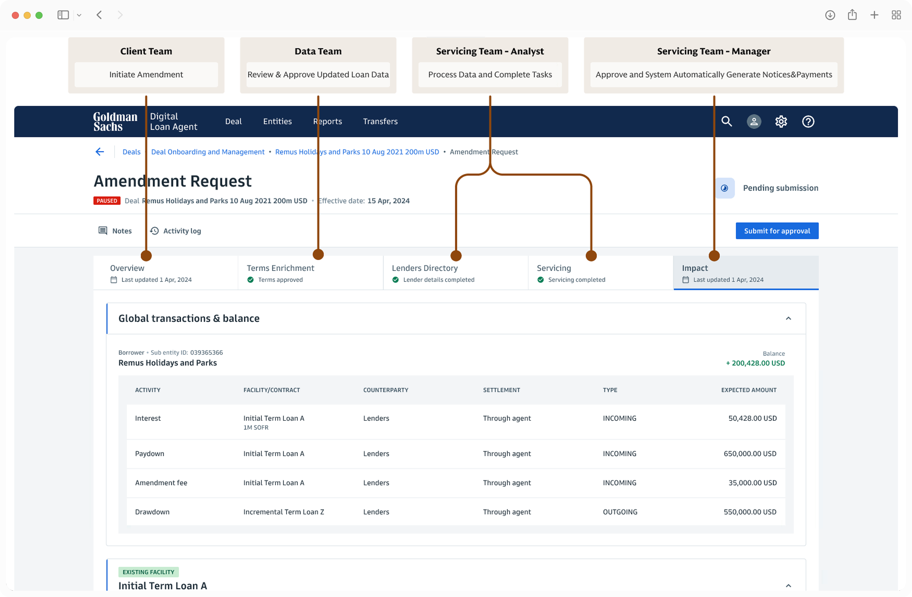
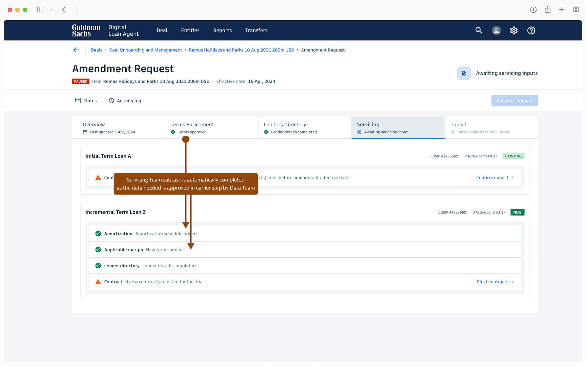
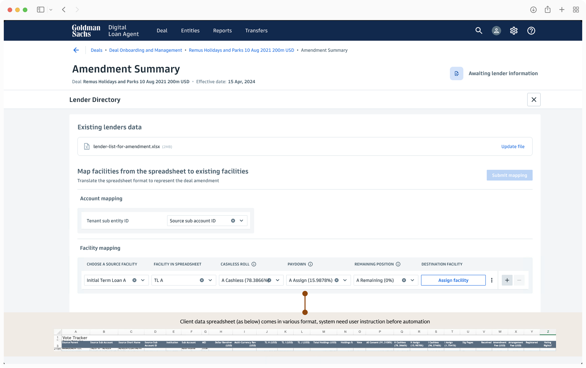
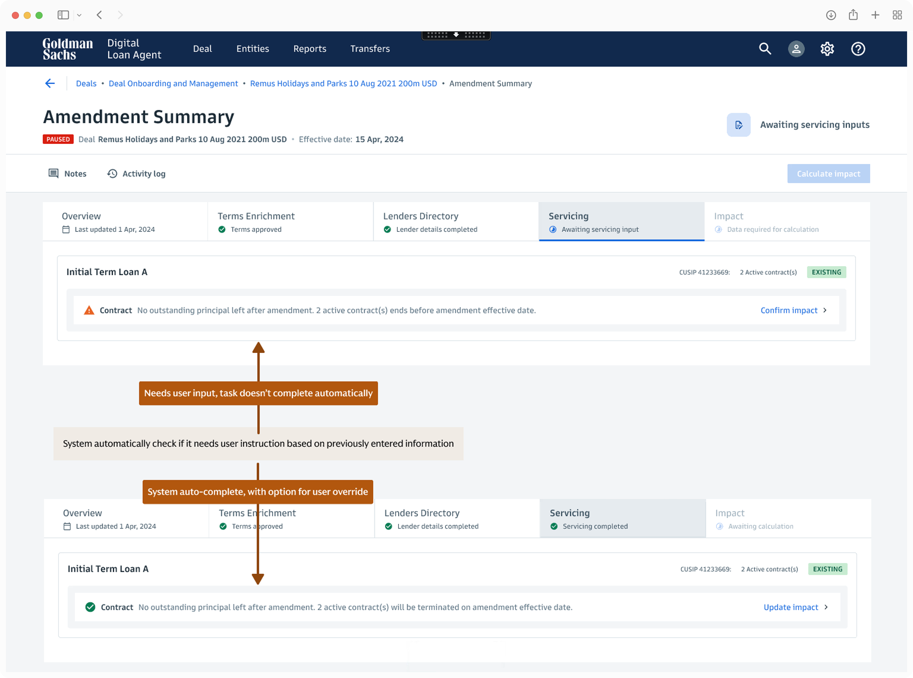

Shared Task Manager: Collapsed a 14-day, 4-team Process into One Day by Redesigning How Cross-Functional Teams, Tools, and Data Handoffs Were Orchestrated at Goldman Sachs
[01 Background]
Business Background
Goldman Sachs helps large corporations arrange commercial loans. When financial markets get volatile, borrowers often renegotiate their loan terms — for example, requesting a lower interest rate — to avoid defaulting. These renegotiations are called amendments, and they trigger a complex internal coordination process.
Business and Stakeholder Problems
Every amendment involves the borrower, Goldman Sachs, and thousands of individual lenders. Inside Goldman Sachs, four internal teams — client, data, servicing, and trading — had to coordinate to complete the process.
The work was entirely manual, hard to follow, and always under tight deadlines. A single data error could cost the firm millions. Missing a deadline risked losing the client entirely.
Amendments are also highly unique — borrowers can restructure their loans in many different ways, and each request determined what every team needed to do. This made the process so complex it could only be handled by the most senior team members.
When market volatility drove a surge in amendment requests in late 2023, the teams relying on legacy tools failed to keep up with the volume. Business stakeholders came to our platform to fast-track a replacement and eventually move off legacy systems entirely.
My Role
As lead designer and design owner across multiple products on our platform, I owned the research, led requirement refinement, shaped the core workflows, drove stakeholder buy-in, and designed the experience 0→1.
My Approach
Replicating a broken process digitally would yield zero value. I treated this not as an interface problem, but as a service architecture problem.
I organized my approach around three priorities:
- Auditing the full multi-team workflow to understand the root causes of the ecosystem failure
- Mapping business logic with SMEs to define what could be automated versus what needed user input and oversight
- Working closely with PM, engineers, and stakeholders to negotiate trade-offs and get buy-in
[02 Research]
I led 14 user and SME interviews across all four teams, with support from another designer. My research goals were:
What each team actually needed to accomplish, separate from what legacy tools forced them to do
Where risk and inefficiency entered the process
The undocumented business rules driving different amendment scenarios
Clarifying User Intent
The existing workflow was shaped by legacy tool limitations, not by what teams actually needed to accomplish. I separated tasks essential to each team's responsibilities from the workarounds they'd invented to compensate.

Root Cause Analysis
I mapped the full workflow across all four teams into a service blueprint to identify where teams suffered most.

Three root causes emerged from the audit:
Workflow sequencing put the wrong team last. The data team's review was supposed to govern the data the servicing team used. But data team's review took 10–14 days, while servicing had to complete their work in a single day. The result: servicing moved forward without approved data, and data team signed off two weeks after the deadline. Unapproved data led to wrong notices and payments worth millions of dollars.
Manual data processing created high-volume, high-stakes error risk. The servicing team spent 70% of their time manually checking thousands of rows in spreadsheets, then re-entering that data by hand into separate systems. Every step was a new opportunity for error.
One team existed entirely as a human workaround. The trading team had no substantive role in the amendment process. They were involved only because the legacy system couldn't support one specific servicing task — so servicing had invented a workaround that required trading to perform it in a separate application.
User Scenarios Research
Amendments are highly variable. Clients can restructure their loan in dozens of ways, and the specific request changes what data comes in, what each team processes, and what decisions they need to make.
I asked SMEs to walk me through real scenarios, surfacing undocumented business rules, conditional decision points, and data inputs and outputs for each. I synthesized these into a scenario matrix to identify patterns that could be standardized and automated versus where users needed input and guidance.

[03 Hypothesis & Architecture]
Hypothesis
If we sequence teams correctly so data is reviewed and approved before downstream work begins — and replace manual data processing with system automation — we can eliminate missed-deadline risk, prevent data errors, and ensure accurate notices and payments. Brought together in a single guided experience, teams can handle increasing volume without growing headcount, and junior members can do work that previously required years of experience.
Workflow Re-Architecture
The core structural fix was an architectural reversal: bring the data team in first — so they capture and approve the governing loan data before the servicing team begins their work.

Stakeholder Alignment
The data team's leadership pushed back. Moving earlier in the process meant committing to tighter deadlines and reprioritizing their workload — neither of which they had agreed to.
I facilitated a cross-functional workshop with the lead PM, SMEs, and lead engineer to develop operational strategies that could make this feasible. The lead PM and I then took those strategies directly to data team leadership and secured buy-in — pairing the ask with a concrete operational plan and a commitment to address their efficiency gaps in a more holistic way going forward.
How I addressed the data team's efficiency gap by designing an AI-powered solution
New Experience End Vision
With the workflow re-sequenced and root causes identified, the design challenge was ensuring the new system was intuitive at scale — standardized for the 80% of common scenarios while remaining flexible for edge cases.
I worked directly with engineers throughout to push automation as far as possible. One key outcome: engineers confirmed the system could fully replace the trading team's workaround, eliminating their role from the process entirely.
[04 Design Solutions]
Shared Task Manager with System Guardrails
Teams juggled 9 tools, manually re-entered the same data across multiple applications, and relied on offline communication to coordinate who was doing what and when.
A single guided workflow where each step leads to the next. Roles and responsibilities are defined per team. Each team enters only the data they own, and that data carries forward automatically — no re-entry, no reconciliation.


Eliminated tool-switching, overlapping work, and data inconsistency. The step-by-step structure made a process that once required years of experience learnable by junior team members.
Saving a partial draft mid-task was out of scope for the initial build. I aligned with SME users on the constraint and designed a warning modal to prevent navigation away before task completion — reducing incomplete-state risk without the engineering overhead.
Automating Heavy Data Processing
The servicing team manually verified thousands of rows of lender data from a client spreadsheet, then hand-entered it into the system to calculate each lender's payments and involvement.
The system ingests the spreadsheet directly, runs calculations automatically, and surfaces a validation layer for users to review and approve — rather than enter.
Eliminated the highest-volume manual task in the process — and the highest risk for error. Real-time validation catches issues before they reach notices or payments. Time to complete this step: 1–4 hours → 10 minutes.
A full in-system data editing interface was out of scope for the deadline. I aligned with users on a fallback: when the system flags an error, users fix it in the source spreadsheet and re-upload. Not ideal long-term, but it protected data integrity without blocking launch.
User-Instructed Automation for Edge Cases
When an amendment didn't fit a standard pattern, there was no structured path forward. Users relied on senior expertise and offline problem-solving — creating delays, inconsistency, and a dependency on the most experienced people on the team.
For cases the system can't interpret on its own, users give the system direct instructions. The system applies them automatically for the remainder of that amendment — no engineering ticket, no workaround required.


The scenario matrix showed that true edge cases were real but rare. The goal wasn't to engineer every possible variation — it was to ensure the 80% ran automatically and the 20% stayed manageable without developer involvement. This kept the system scalable without making it brittle.
User instructions are amendment-specific and don't persist across different amendments — persisting them would require a rules-management system that was out of scope. Users are informed of this upfront so expectations are set.
[05 Outcome]
After launch, the feature successfully processed amendments for a month — prompting business leadership to fast-track migrating their loan portfolio off the legacy system. Onboarding ran 4× faster than before.
Ten months after launch, the feature had processed 80% of all amendment requests coming into the business.
Impact
A note on what came next: The data team's efficiency gap — the one I committed to addressing as part of getting their buy-in — became its own product.